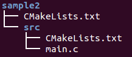

C++ Tutorial - make &CMake; - 2017
The make is used to build executable programs and libraries from source code.
Make is invoked with a list of target file names to build as command-line arguments:
make TARGET [TARGET ...]
Without arguments, make builds the first target that appears in its makefile, which is traditionally a symbolic phony target named all.
Visual C++ provides command-line tools for programmers who prefer to build their applications from the command prompt. If you want to use the command line to build a project created in Visual C++, you can use one of the following:
- CL
Use the compiler (cl.exe) to compile and link source code files.
- Link
Use the linker (link.exe) to link compiled object files.
- MSBuild (Visual C++)
Use MSBuild to build Visual C++ projects and Visual Studio solutions from the command line. Invoking this utility is equivalent to running the Build project or Build Solution command in the Visual Studio integrated development environment.
- DEVENV
Use DEVENV combined with a command line switch, such as /Build or /Clean, to perform certain build commands without displaying the Visual Studio IDE.
- NMake
Use NMake to automate tasks that build Visual C++ projects.
This nmake section assumes that we have Visual C++ 2008.
When we run nmake, it looks for makefile in the current directory. We can specify a file using the
nmake -f myfile option.
While it may look like cl.exe is doing all the work, cl.exe does the compiling and link.exe does the linking. For all the compile options we can use cl and for all the linker options we can use link. We can run nmake without a target or we can specify a target such as nmake clean. Without a target nmake will look for the first available target in the makefile and build it.
Here is the example of nmake calling makefile.
Here are the files needed:
- C:\Testing\makefile
myHOME = C:\Testing INCS=$(myHOME)\include LIBS=$(myHOME)\lib mybuild: main.obj foo.obj cl /o myTest.exe main.obj foo.obj /link \ /LIBPATH:$(LIBS) myLib.lib /NODEFAULTLIB:libcmt.lib main.obj: main.cpp cl /c /EHsc main.cpp -I $(INCS) foo.obj: foo.cpp cl /c /EHsc foo.cpp -I $(INCS) all:mybuild clean: del *.exe *.obj
The make does the following:
- make runs the rule for first target mybuild and figures its dependencies on main.obj and foo.obj.
- make next checks if any of the two object files are listed as targets. If yes, as in the example, it runs the rule for first prerequisite, that is, main.obj, to find its dependencies.
- make checks whether the prerequisites of main.obj have further dependencies. If no, as in the example, it checks if main.obj is up to date. If not, it runs the command for main.obj by compiling main.cpp to get the object file.
- make looks at the targets foo.obj and compiles these object files in a similar fashion.
- make returns to first target mybuild. As it now has all up-to-date object files for the rule, it executes the command to build mybuild.
- make removes (deletes) mybuild and all object files at make clean.
- C:\Testing\main.cpp
#include <iostream> #include "foo.h" using namespace std; int main(void) { cout << "main: This is test!" << endl; foo(); return 0; } - C:\Testing\foo.cpp
#include <iostream> #include "d.h " using namespace std; void foo() { cout << "foo(): This is from foo!" << endl; HelloWorld(); } - C:\Testing\include\foo.h
void foo();
- C:\Testing\include\d.h
// d.h #pragma once void HelloWorld();
- C:\Testing\lib\myLib.lib
This library has a function "HelloWorld(), and it just prints out "Hello world!"- d.h
// d.h #pragma once void HelloWorld();
- i.cpp
// i.cpp #include <stdio.h> // For the printf() function #include "d.h" void HelloWorld() { printf("Hello world!"); }
- d.h
Here is the Testing.zip file.
For more on library (static vs dynamic, dll), see Libraries.
The make keeps a set of executable program current, based on time stamps of the programs and the source files that each program is dependent on.
The make has lots of goodies for us. All we should do is to just let make know what we want to from it. What's why we need a makefile to tell make what to do. The makefile tells make how to compile and link a program. The make searches the current directory for the makefile. For example, GNU make searches files in order for a file named one of GNUmakefile, makefile, Makefile and then runs the specified (or default) target(s) from (only) that file.
The syntax of the make is:
make [options] [target_files] [arguments]
Arguments
The target_file refers to the targets on dependency lines in the makefile. If we don't specify it, make updates the target on the first dependency line in the makefile.Options
If we're not using the -f option, make take its input from a file named makefile or Makefile, in that order, in the current working directory. The arguments of the form name=value set the variable name to value inside the makefile.
We will use the previous makefile as a sample.
------------- makefile --------------- myHOME = C:\Testing INCS=$(myHOME)\include LIBS=$(myHOME)\lib mybuild: main.obj foo.obj cl /o myTest.exe main.obj foo.obj /link \ /LIBPATH:$(LIBS) myLib.lib /NODEFAULTLIB:libcmt.lib main.obj: main.cpp cl /c /EHsc main.cpp -I $(INCS) foo.obj: foo.cpp cl /c /EHsc foo.cpp -I $(INCS) all:mybuild clean: del *.exe *.obj --------------------------------------
To use this makefile to create the executable file called mybuild, type:
make
Since clean is not a prerequisite of edit, this rule will not run at all if we give the command make with no arguments.
So, to use this makefile to delete the executable file and all the object files from the directory, type:
make clean
There are couple of things we should know about the makefile:
- A simple makefile consists of rules with the following syntax:
target ... : prerequisites (dependencies) ... recipe (system command) ...A rule explains how and when to remake certain files which are the targets of the particular rule. make carries out the recipe on the prerequisites to create or update the target. A rule can also explain how and when to carry out an action.
In other words, a rule tells make what it's making (target), what it's made from (dependencies), and how to make it (system command).
- A target is usually the name of a file that is generated by a program. It could be executable or object files. A target can also be the name of an action to carry out, such as clean.
- A prerequisite is a file that is used as input to create the target. A target often depends on several files.
- A recipe is an action that make carries out. A recipe may have more than one command, either on the same line or each on its own line. Note that we need to put a tab character at the beginning of every recipe line. Note that make does not know anything about how the recipes work. It is up to us to supply recipes that will update the target file properly. All make does is execute the recipe we have specified when the target file needs to be updated.
When a target is a file, it needs to be recompiled or relinked if any of its prerequisites change. In addition, any prerequisites that are themselves automatically generated should be updated first.
- Defines variables that will be used in the compiling and the linking. Similar to environment variables.
myHOME = C:\Testing INCS=$(myHOME)\include LIBS=$(myHOME)\lib
- Defines a target called mybuild that depends on other targets "main.obj" and "foo.obj".
We want to make sure that the dependencies are built.
mybuild: main.obj foo.obj
- Here it finds the target main.obj required at dependency line.
It depends on the cpp source file main.cpp so now we go to the next line to compile the file.
This is a compile only /c option.
As you can see we are using -I $(INCS) which is specifying the directory to search for include files.
main.obj: main.cpp cl /c /EHsc main.cpp -I $(INCS) foo.obj: foo.cpp cl /c /EHsc foo.cpp -I $(INCS)
- It builds main.obj and foo.obj targets.
- Once all the dependencies are built, it comes back to line which defines dependency. Then it builds the target.
Here we are using /link to give the linker options which in this case is the LIBPATH to the myLib.lib.
cl /o myTest.exe main.obj foo.obj /link \ /LIBPATH:$(LIBS) myLib.lib /NODEFAULTLIB:libcmt.lib
- /NODEFAULTLIB Ignores all (or specified) default libraries when resolving external references.
- LIBCMT.LIB is a reentrant library for creating multithread programs.
- The MSVCRT.LIB library, which calls code in the shared MSVCRT70.DLL, is also reentrant.
- /EHsc: catch clause will not catch asynchronous exceptions.
Here is the files cpp_starter_package.zip
Let's look at the Makefile.
------------ Makefile -----------------
CC=g++
CFLAGS=-O3 -funroll-loops -c
LDFLAGS=-O2 -lm
SOURCES=Bot.cc MyBot.cc State.cc
OBJECTS=$(SOURCES:.cc=.o)
EXECUTABLE=MyBot
#Uncomment the following to enable debugging
#CFLAGS+=-g -DDEBUG
all: $(OBJECTS) $(EXECUTABLE)
$(EXECUTABLE): $(OBJECTS)
$(CC) $(LDFLAGS) $(OBJECTS) -o $@
.cc.o: *.h
$(CC) $(CFLAGS) $< -o $@
clean:
-rm -f ${EXECUTABLE} ${OBJECTS} *.d
-rm -f debug.txt
.PHONY: all clean
-----------------------------------------
If we run make, its output looks like this:
C:\GoogleAI\CPP>make g++ -O3 -funroll-loops -c Bot.cc -o Bot.o g++ -O3 -funroll-loops -c MyBot.cc -o MyBot.o g++ -O3 -funroll-loops -c State.cc -o State.o g++ -O2 -lm Bot.o MyBot.o State.o -o MyBot -----------------------------------------
- Syntax (Rule)
The basic syntax of the Makefile looks like this:
target: dependencies [tab - a real tab character, not eight spaces!] system command
It is a rule, which tells make what it's making (target), what it's made from (dependencies), and how to make it (system command). Variables
We can use variables when writing Makefiles. It comes in handy in situations where we want to change the compiler, or the compiler options. In the example above, we defined the following variables.CC=g++ CFLAGS=-O3 -funroll-loops -c LDFLAGS=-O2 -lm SOURCES=Bot.cc MyBot.cc State.cc OBJECTS=$(SOURCES:.cc=.o) EXECUTABLE=MyBot
To use them, we just assign a value to a variable before we start to write our targets. After that, we can just use them with the dereference operator $(VAR)- funroll-loops
Typically improves performance on code using iterative DO loops by unrolling them. Automatic Variables - Macro ($@ and $<)
The automatic variables have values computed afresh for each rule that is executed, based on the target and prerequisites of the rule. In the example, we used $@ for the object file name and $< for the source file name.$@ The file name of the target of the rule $% The target member name, when the target is an archive member $< The name of the first prerequisite $? The names of all the prerequisites that are newer than the target $^ The names of all the prerequisites with spaces between them $+ Similar to '$^', but prerequisites listed more than once are duplicated in the order they were listed in the makefile $* The stem with which an implicit rule matches. For example, the target aa.o matches the pattern '%.o', then 'aa' is the stem. Often the prerequisites include header files as well, which we do not want to mention in the recipe. The automatic variable $< is just the first prerequisite:
aa.o : aa.c header1.h header2.h cc -c $(CFLAGS) $< -o $@We should be aware of the limited scope in which automatic variable values are available: they only have values within the recipe. In particular, we cannot use them anywhere within the target list of a rule because they have no value there and will expand to the empty string.
- OBJECTS=$(SOURCES:.cc=.o)
This is called substitution reference. It substitutes the value of a variable with alterations that you specify. It has the form $(var:x=y) and its meaning is to take the value of the variable var, replace every x at the end of a word with y in that value, and substitute the resulting string. So, the line means OBJECTS are all the sources, with .cc replaced by .o. .cc.o in
.cc.o: *.h $(CC) $(CFLAGS) $< -o $@
This is a so-called a double-suffix rule. It is defined by a pair of suffixes: the target suffix and the source suffix. It matches any file whose name ends with the target suffix. The corresponding implicit prerequisite is made by replacing the target suffix with the source suffix in the file name. A two-suffix rule whose target and source suffixes are .o and .cc is equivalent to the pattern rule %.o : %.cc..d in -rm -f ${EXECUTABLE} ${OBJECTS} *.d
For each source file (*.cc) there is a makefile *.d which lists what files the object file *.o depends on. That way only the source files that have changed need to be rescanned to produce the new prerequisites.- Curly braces {}
Same as parenthesis, (). .PHONY
The target clean is not a file, but the name of an action. Since we normally do not want to carry out the actions in this rule, clean is not a prerequisite (dependent) of any other rule. Consequently, make never does anything with it unless we tell it specifically. Note that this rule not only is not a prerequisite, it also does not have any prerequisites, so the only purpose of the rule is to run the specified recipe. Targets that do not refer to files but are just actions are called phony targets.
We explicitly declare a target as phony, using special target command .PHONY. This is to avoid conflicts with a file with the same name, clean, and to enhance the makefile performance by preventing it from executing rm since rm will always be executed every time you called make clean, because make assume that the clean file is always new.
Because the rm command does not create a file named clean, the rm command will be executed every time we do make clean. The phony target will cease to work if anything ever does create a file named clean in this directory. Since it has no prerequisites, the file clean would inevitably be considered up to date, and its recipe would not be executed. To avoid this problem, we can explicitly declare the target to be phony, using the special target .PHONY!
.PHONY: clean
Once this is done, make clean will run the recipe regardless of the existence of a file named clean. Since it knows that phony targets do not name actual files that could be remade from other files, make skips the implicit rule search for phony targets. This is why declaring a target phony is good for performance, even if we are not worried about the actual file existing.
CMake, the cross-platform, open-source build system. CMake is a family of tools designed to build, test and package software. CMake is used to control the software compilation process using simple platform and compiler independent configuration files. CMake generates native makefiles and workspaces that can be used in the compiler environment of your choice. - from http://www.cmake.org/
The build process with CMake is straightforward: configuration files, called CMakeLists.txt files, are placed in the source directories and are then used to create standard build files. It can generate makefiles for many platforms and IDEs including Unix, Windows, Mac OS X, MSVC, Cygwin, MinGW and Xcode. The platform's native build tools are used for the actual building.
Each directory in our project should have a makefile file. The makefile file in a sub-directory inherits properties set in the parent directory, reducing the amount of code duplication.
- CMake is a generator: it generates native build systems files (Makefile, IDE project files, ...), so it does not compile (i.e. build) the sources, the underlying build tool (make, XCode, Code::Blocks...) does.
- CMake scripting language is used to describe the build
- The developer edit CMakeLists.txt invoke CMake but should never edit the generated files
- CMake may be (automatically) re-invoked by the build system
- CMake: CMake is running & processing CMakeLists.txt
- Build: the build tool runs and invokes the compiler
- Install: the compiled binaries are installed i.e. from build area to an install location.
- CPack: CPack is running for building package
- Package Install: the package from previous step is installed
picture from http://www.cmake.org/
Brief tutorial
CMake-tutorial-pdf.pdf from cmake.org
Here are some steps of running CMake:
- Put the sources (bogo.c) in a directory. In this example, ~/Work/bogo/bogo.c
/* bogo.c */ #include <stdio.h> int main() { printf("bogo CMake test\n"); } - Make a new CMakeLists.txt in the current directory: ~/Work/bogo/CMakeLists.txt
- The CMakeLists.txt looks like this:
cmake_minimum_required(VERSION 2.8.12) project(bogoCMake) add_executable(bogoCMake bogo.c)
- Make a build directory. ~/Work/bogo/build. Everything will be built under this directory.
- At this stage, if we look into the ~/Work/bogo directory, it looks like this:
$ ls bogo.c build CMakeLists.txt
- Now, go down to the build directory, then type in "cmake .." from the build directory.
We get the similar to the following$ cmake .. -- The C compiler identification is GNU 4.7.2 -- The CXX compiler identification is GNU 4.7.2 ... -- Configuring done -- Generating done -- Build files have been written to: /home/Work/bogo/build
- If we look into the build directory, we can see what's been done by the CMake.
$ ls CMakeCache.txt CMakeFiles cmake_install.cmake Makefile
- We can finish the process by issuing make
$ make Scanning dependencies of target bogoCMake [100%] Building C object CMakeFiles/bogoCMake.dir/bogo.o Linking C executable bogoCMake [100%] Built target bogoCMake
- Let's look into the directory to see what's been newly added:
$ ls bogoCMake CMakeCache.txt CMakeFiles cmake_install.cmake Makefile
- Since our executable has been made (bogoCMake), we can run it.
$ ./bogoCMake bogo CMake test
This sample is also a very simple one.
Let's make a directory call sample2 and subdirectory src under sample2:
$ mkdir sample2 $ cd sample2 $ mkdir src
Then, create CMakeLists.txt:
$ touch CMakelist.txt
Then, under src folder, create another CMakeLists.txt:
$ cd src $ touch CMakeLists.txt
Then, create a main.c:
#include "stdio.h"
int main()
{
printf("Sample2 CMake\n");
return 0;
}
Now, our file structure looks like this:
Note that we have two CMakeLists.txt files. Let's work on the file in sample2/src/CMakeLists.txt:
ADD_EXECUTABLE( cmake-sample2 main.c )
Here cmake-sample2 is an executable target to be built from the source file (main.c).
Then, let's modify another one in the top directory: sample2/CMakeLists.txt like the following:
PROJECT( cmake-sample-II ) ADD_SUBDIRECTORY( src )
Now, we may want to make build directory so that we can keep build files under that directory.
$ mkdir build $ cd build
Time to run cmake. Note that we're running it under build, so we need to tell it where the CMakeLists.txt. In our case, it's one up:
k@laptop:~/Work/bogo/sample2/build$ cmake ..
-- The C compiler identification is GNU 4.8.2
-- The CXX compiler identification is GNU 4.8.2
-- Check for working C compiler: /usr/bin/cc
-- Check for working C compiler: /usr/bin/cc -- works
-- Detecting C compiler ABI info
-- Detecting C compiler ABI info - done
-- Check for working CXX compiler: /usr/bin/c++
-- Check for working CXX compiler: /usr/bin/c++ -- works
-- Detecting CXX compiler ABI info
-- Detecting CXX compiler ABI info - done
CMake Warning (dev) in CMakeLists.txt:
No cmake_minimum_required command is present. A line of code such as
cmake_minimum_required(VERSION 2.8)
should be added at the top of the file. The version specified may be lower
if you wish to support older CMake versions for this project. For more
information run "cmake --help-policy CMP0000".
This warning is for project developers. Use -Wno-dev to suppress it.
-- Configuring done
-- Generating done
-- Build files have been written to: /home/k/Work/bogo/sample2/build
cmake created a lot for us as we can see under build directory:

k@laptop:~/Work/bogo/sample2/build$ ls CMakeCache.txt CMakeFiles cmake_install.cmake Makefile src
Now, all we have to do is to run make:
k@laptop:~/Work/bogo/sample2/build$ make Scanning dependencies of target cmake-sample2 [100%] Building C object src/CMakeFiles/cmake-sample2.dir/main.o Linking C executable cmake-sample2 [100%] Built target cmake-sample2
Finally, we can run the executable:
k@laptop:~/Work/bogo/sample2/build$ src/cmake-sample2 Sample2 CMake
Ph.D. / Golden Gate Ave, San Francisco / Seoul National Univ / Carnegie Mellon / UC Berkeley / DevOps / Deep Learning / Visualization